Sobre as/os autoras/es
Todo o livro
Helena de Medeiros Caseli 📨️
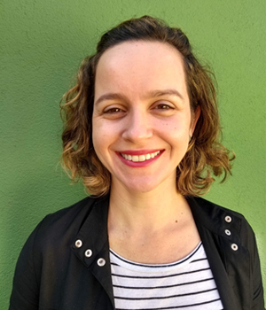
Helena Caseli é formada em Ciência da Computação pela UFU, com pós-graduação no ICMC/USP. É professora titular na UFSCar, onde atua desde 2008 e coordena o LALIC (Laboratório de Linguística e Inteligência Computacional). Suas áreas de interesse incluem aprendizado de máquina, tradução automática e PLN aplicado a redes sociais em domínios como política e saúde mental. Foi a idealizadora, é uma das organizadoras deste livro e colaborou com os Capítulos O que é PLN?, Sequência de caracteres e palavras, E agora, PLN?, Tradução Automática e Detecção de Transtornos de Saúde Mental a partir de Texto.
Maria das Graças Volpe Nunes 📨️

Maria das Graças Volpe Nunes é formada em Ciência da Computação pela UFSCar, mestre pela USP e doutora pela PUC-Rio. Foi docente no ICMC-USP, São Carlos, de 1981 a 2013, onde agora é professora sênior. Atualmente é membro do C4AI, da USP, IBM e FAPESP. É uma das fundadoras do NILC, onde atuou em várias áreas do PLN para português: revisão ortográfica e gramatical, tradução automática, sumarização, análise de sentimentos, entre outras. É uma das organizadoras deste livro e colaborou com os Capítulos O que é PLN?, Questões éticas em IA e PLN e E agora, PLN?.
Adriana Silvina Pagano 📨️

Adriana Pagano é formada em Letras pela Universidad Nacional de La Plata. Fez seu mestrado no Programa de Inglês e Literatura Correspondente da UFSC e seu doutorado no Programa de Estudos Linguísticos da UFMG. É professora titular da Faculdade de Letras da UFMG desde 1995. Suas áreas de interesse incluem tradução, produção textual multilíngue e modelagem sistêmico-funcional da linguagem. Neste livro, colaborou com os Capítulos O que é PLN?, A ordem e a função das palavras em uma sentença, Ferramentas e recursos para o processamento sintático e PLN na Saúde.
Adriano L. I. Oliveira 📨️

Adriano Oliveira é engenheiro eletrônico (1993), mestre e doutor em Computação pela UFPE (1997 e 2004). Foi Professor Visitante da École de Technologie Supérieure (ÉTS, Université du Québec, Canadá), 2018-2019. É Professor da UFPE e bolsista de produtividade em pesquisa do CNPq, nível 1D. Neste livro, colaborou com o capítulo Reconhecimento de Entidades Nomeadas no Domínio Legal.
Aline Macohin 📨️

Aline Macohin é formada em Direito e Computação, com Mestrado em Computação Aplicada pela UTFPR e Doutorado em Direito pela UFPR. É advogada, analista de sistemas no poder público há 13 anos, membro da Comissão de Direito Digital e Proteção de dados da OAB/PR e professora de pós-graduação na PUCPR. Autora do site https://www.iaresponsavel.com.br. Suas áreas de interesse incluem aprendizado de máquina, PLN, governança de inteligência artificial e proteção de dados. Neste livro, colaborou com o capítulo PLN no Direito.
Aline Paes 📨️
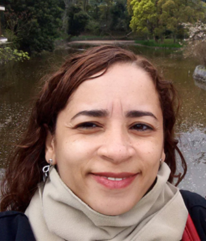
Aline Paes é formada em Ciência da Computação pela UERJ, com mestrado e doutorado em inteligência artificial pela COPPE/Sistemas/UFRJ e estágio sanduíche de doutorado no Imperial College London. É docente na UFF desde 2013. Suas áreas de interesse incluem aprendizado de máquina relacional, aprendizado de representações para linguagem, IA para impacto social positivo e IA explicável. Neste livro, colaborou com os Capítulos Modelos de linguagem e ChatGPT, MariTalk e outros agentes de conversação.
Aline Aver Vanin 📨️
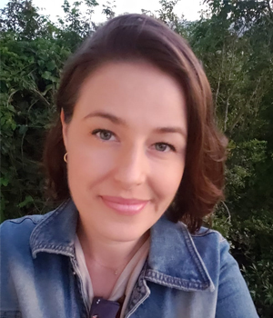
Aline Aver Vanin é licenciada em Letras pela UCS, com mestrado e doutorado em Linguística pela PUCRS. Atuou em estágio pós-doutoral no Laboratório de PLN do Programa de Pós-Graduação em Computação da PUCRS. É docente do Departamento de Educação e Humanidades da UFCSPA desde 2014 e colaboradora do Programa de Pós-Graduação em Letras da UNISC desde 2019. Tem interesse na interface discurso e PLN. Neste livro, colaborou com o capítulo Resolução de correferência.
Aline Villavicencio 📨️
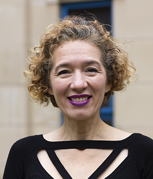
Aline Villavicencio é formada em Ciência da Computação pela PUC-RS e doutora pela Universidade de Cambridge (Inglaterra). É professora titular da Universidade de Exeter (Inglaterra) onde é diretora do Institute of Data Science and Artificial Intelligence. Sua pesquisa é em Processamento de Linguagem Natural (PLN) inspirado em modelos cognitivo computacionais de processamento de linguagem e com foco em processamento de expressões multipalavras. Neste livro, colaborou com o capítulo Expressões multipalavras.
Amanda Pontes Rassi 📨️
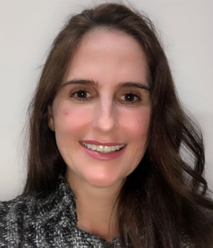
Amanda Rassi é bacharel e mestre em Linguística pela Universidade Federal de Goiás (UFG) e doutora na mesma área pela Universidade Federal de São Carlos (UFSCar). Tem experiência com correção automática de redações, tendo atuado na Redação Nota 1000 e atualmente na Somos Educação. Suas áreas de interesse incluem sintaxe, semântica, lexicologia, lexicografia e PLN. Neste livro, colaborou com os Capítulos Sequência de caracteres e palavras, A ordem e a função das palavras em uma sentença e Correção Automática de Redação.
Ana Clara Souza Pagano 📨️
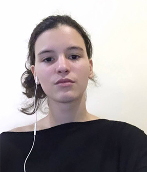
Ana Clara Souza Pagano é formada em Linguística Teórica e Descritiva pela Universidade Federal de Minas Gerais (UFMG). Fez seu Trabalho de Conclusão de Curso em Estilometria computacional. Suas áreas de interesse incluem: Aprendizado de Máquina (AM), Inteligência Artificial (IA), tradução e Processamento de Linguagem Natural (PLN). Neste livro, colaborou com os Capítulos A ordem e a função das palavras em uma sentença e Ferramentas e recursos para o processamento sintático.
Ana Paula Banza 📨️

Ana Paula Banza é Licenciada em Línguas e Literaturas Modernas pela Universidade de Lisboa (Portugal); Doutora em Linguística pela Universidade de Évora (Portugal), onde lecciona, no Departamento de Linguística e Literaturas, desde 1991, sendo, atualmente, professora associada com agregação. Desenvolve investigação nas áreas da Filologia, Crítica Textual, Linguística Histórica/História da Língua e Variação linguística, centrando-se os seus interesses na edição crítica de textos literários e não literários, com destaque para a obra do Padre António Vieira, e no estudo dos fenómenos de mudança e de variação na língua portuguesa. Neste livro, colaborou com o capítulo PLN e Humanidades Digitais.
Ana Sofia Ribeiro 📨️
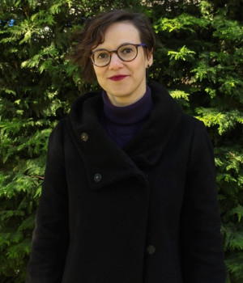
Ana Sofia Ribeiro é formada em História e doutorada em História pela Universidade do Porto. É investigadora auxiliar do CIDEHUS, Universidade de Évora, Portugal. As suas áreas de interesse estão ligadas aos métodos de utilização de PLN aos textos históricos e como os resultados de técnicas como o reconhecimento de entidades nomeadas (NER) ou grafos de conhecimento (knowledge graphs) podem ser usados como variáveis da investigação em história. Neste livro, colaborou com o capítulo PLN e Humanidades Digitais.
André Carlos Ponce de Leon Ferreira de Carvalho 📨️

André Carlos de Carvalho é professor titular do ICMC-USP e Vice-Diretor do Centro de Inteligência Artificial e Aprendizado de Máquina (CIAAM) da USP. Seus principais interesses de pesquisa são Aprendizado de Máquina, Mineração de Dados e Ciência de Dados, com aplicações em várias áreas. Escreveu vários livros, entre eles Inteligência Artificial: Uma abordagem de Aprendizado de Máquina, publicado pelo GrupoGen em 2011 e prêmio Jabuti 2012, e A General Introduction to Data Analytics, publicado pela Wiley, em 2018. Neste livro, colaborou com o capítulo Reconhecimento de Entidades Nomeadas no Domínio Legal.
Altigran Soares Silva 📨️
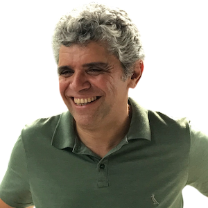
Altigran Soares da Silva concluiu doutorado em Ciência da Computação pela UFMG (2002) e é professor titular do Instituto de Computação da UFAM. Seus interesses incluem: Aprendizagem de Máquina, Modelos de Linguagem, Engenharia de Dados e Recuperação de Informação. Neste livro, colaborou nos capítulos Avaliação de Large Language Models: Fundamentos, Métricas Tradicionais e Desafios Atuais e Fundamentos da Geração Aumentada por Recuperação. Neste livro, colaborou com os Capítulos Avaliação de Grandes Modelos de Linguagem e Geração Aumentada por Recuperação (RAG).
André Carvalho 📨️

André Carvalho é doutor em Informática pela Universidade Federal do Amazonas, onde, desde 2013 é professor associado, sendo também também é coordenador do bacharelado em Inteligência Artificial. Também é coordenador do projeto de pesquisa IATS - Inteligência Artificial aplicada em Teste de Software, que tem como foco aplicação de técnicas de processamento de linguagem natural em tarefas de qualidade de software. Sua pesquisa tem como foco áreas como Inteligência Artificial, Aprendizagem de Máquina, Recuperação de Informação e Ciência de Dados. Neste livro, colaborou com os Capítulos Avaliação de Grandes Modelos de Linguagem e Geração Aumentada por Recuperação (RAG).
Arnaldo Candido Junior 📨️

Arnaldo Candido Junior possui graduação em Ciência da Computação pela Universidade Estadual Paulista Júlio de Mesquita Filho (2005), mestrado em Ciências da Computação e Matemática Computacional pelo Instituto de Ciências Matemáticas e de Computação (ICMC) da Universidade de São Paulo (USP) (2008) e doutorado em Ciências da Computação e Matemática Computacional também pelo ICMC/USP. É professor da Universidade Estadual Paulista. Atua nas áreas de linguagens de programação e inteligência artificial (PLN e processamento da fala). Neste livro, colaborou com o capítulo Recursos para o processamento de fala.
Beatriz Raposo de Medeiros 📨️

Beatriz Raposo de Medeiros é professora associada de Fonética da Universidade de São Paulo (USP), onde coordena o Laboratório de Fonética e Linguagem Lafalin. É doutora em Linguística pela Universidade Estadual de Campinas (Unicamp). Realizou pós-doutorado no Laboratoire Langue Parole, na Université Aix-Marseille em 2007. Em 2023 recebeu a BPE, bolsa de pesquisa da FAPESP, em período como professora visitante da University of Southern California, para estudo da laringe e sua relação mais estreita com capacidades entoacionais humanas. Seu trabalho de pesquisa abrange comparações entre fala e canto, tratando aspectos como a inteligibilidade, a organização temporal, a sincronização e a estabilidade da frequência fundamental. Neste livro, colaborou com o capítulo Classificação de Áudio aplicada à Saúde.
Brenda Salenave Santana 📨️

Brenda Salenave Santana é formada em Ciência da Computação pela Universidade Federal de Santa Maria (UFSM), com mestrado e doutorado em Computação pela Universidade Federal do Rio Grande do Sul (UFRGS). É docente na Universidade Federal de Pelotas (UFPel) desde 2023. Suas áreas de interesse incluem aprendizado de máquina e detecção de discursos de ódio. Neste livro, colaborou com o capítulo PLN em Redes Sociais.
Brielen Madureira 📨️

Brielen Madureira é formada em Matemática Aplicada e Computacional pela Universidade de São Paulo (USP). Tem mestrado em Ciência e Tecnologia da Linguagem pela Universidade de Saarland (Alemanha) e doutorado em Linguística Computacional pela Universidade de Potsdam (Alemanha), onde participou do grupo de pesquisa em Diálogo. Mais amplamente, tem interesse na avaliação de tecnologias de linguagem e nas urgentes considerações éticas que elas demandam. Atualmente é pesquisadora em fase de pós-doutorado na Universidade de Leipzig (Alemanha), no grupo Climate Discourse. Neste livro, colaborou com os Capítulos Avaliação de tecnologias de linguagem, Diálogo e Interatividade e Responsabilidade no desenvolvimento e uso de tecnologias de linguagem baseadas em IA.
Camila de Araújo Azevedo 📨️

Camila Azevedo foi aluna da primeira turma do Bacharelado em Linguística da Universidade Federal de São Carlos (UFSCar), atua há mais de 10 anos com síntese de voz e atualmente trabalha no time de processamento de fala do SiDi. Neste livro, colaborou com o capítulo Texto ou fala?.
Carlos Ramisch 📨️

Carlos Ramisch é formado em ciência da computação pela Universidade Federal do Rio Grande do Sul (UFRGS) e concluiu o doutorado em 2012, em co-tutela entre a UFRGS e a Université de Grenoble (França). Desde 2013, ele é professor na Universidade de Aix-Marseille e pesquisador afiliado ao Laboratoire d’Informatique et Systèmes, na França. Sua pesquisa é focada na área de semântica computacional, em especial no processamento de expressões multipalavras. Neste livro, colaborou com o capítulo Expressões multipalavras.
Cassia Trojahn dos Santos 📨️
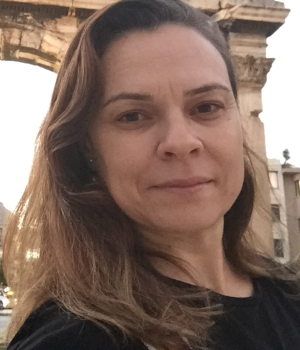
Cassia Trojahn dos Santos é formada em Ciência da Computação pela Unisc, mestre pela Unisinos e doutora pela Universidade de Evora (Portugal), com pós-doutorado pelo INRIA (França). Foi docente do Departamento de Informática e Matemática na Universidade de Grenoble (França) entre 2012 e 2024. Atualmente, é docente na Universidade de Grenoble Alpes, associada ao centro de pesquisa INRIA Alpes. Suas áreas de interesse incluem representação de conhecimento, alinhamento de ontologias, e dados FAIR. Neste livro, colaborou com o capítulo PLN e Humanidades Digitais.
Celso Ricardo Fernandes de Carvalho 📨️
Celso Ricardo Fernandes de Carvalho é formado em Fisioterapia pela UFSCar. Atualmente é Professor Associado da Faculdade de Medicina da Universidade de São Paulo (FMUSP). Tem interesse pelas áreas Processamento de Linguagem Natural e Inteligência Artificial em pessoas com doenças respiratórias. Neste livro, colaborou com o capítulo Classificação de Áudio aplicada à Saúde.
Cláudia Freitas 📨️
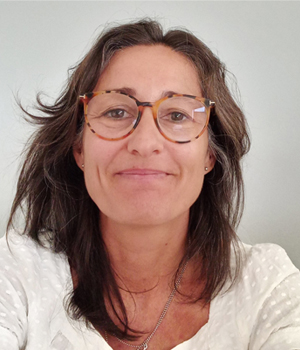
Cláudia Freitas é formada em Letras pela PUC-Rio, onde concluiu o doutorado em Estudos da Linguagem (2007) sobre a construção de ontologias a partir de corpus. De 2012 a 2022 foi docente do Programa de Pós-Graduação em Estudos da Linguagem da PUC-Rio, onde fundou o grupo ComCorHD (Linguística Computacional, Corpus e Humanidades Digitais). De 2007 a 2022 foi também pesquisadora da Linguateca. Ao longo de 2023 e 2024 foi pesquisadora do ICMC/USP, vinculada ao C4AI, e atualmente é pesquisadora independente. Suas áreas de interesse incluem construção e avaliação de datasets/corpora, semântica/significado, e articulação entre abordagens simbólicas e neurais. Neste livro, colaborou com os Capítulos E o significado?, Conjunto de dados, dataset e corpus, Avaliação conjunta em português e ChatGPT, MariTalk e outros agentes de conversação.
Claudia Maria Cabral Moro Barra 📨️
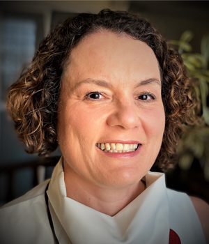
Claudia Moro é engenheira de computação pela PUCPR, com mestrado (UNICAMP) e doutorado (USP) em engenharia elétrica/biomédica. É professora titular da PUCPR onde atua desde 1995, vinculada ao Programa de Pós-graduação em Tecnologia em Saúde (desde 2003), atuando nas áreas de PLN em textos clínicos, inteligência artificial em saúde e, interoperabilidade entre sistemas de informações em saúde. Neste livro, colaborou com o capítulo PLN na Saúde.
Cristiane Namiuti 📨️
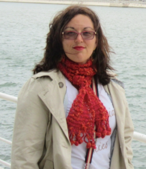
Cristiane Namiuti é Bacharel em Linguística pela UNICAMP (2002) onde também obteve o título de Doutora em Linguística (2008). Fez parte da equipe do Corpus Anotado do Português Histórico Tycho Brahe (1998-2010). Desde 2008, atua como docente da Universidade Estadual do Sudoeste da Bahia (UESB) e no PPGLin/UESB desde sua fundação em 2010. Atualmente, integra o grupo de pesquisadores e co-fundadores dos Laboratórios LAPELINC/UESB e LaViHD/USP e, desde 2020, faz parte de uma das equipes do C4AI - Centro de Inteligência Artificial da USP (LaViHD-C4AI). Suas áreas de interesse incluem metodologias automáticas de anotação e busca de dados em textos escritos, mudança linguística, história do português, linguística de corpus e humanidades digitais. Neste livro, colaborou com o capítulo O papel dos dados no pré-treinamento de Grandes Modelos de Linguagem.
Crysttian Arantes Paixão 📨️

Crysttian Arantes Paixão é formado em Ciência da Computação pela Universidade Federal de Lavras (UFLA) e Estatística pela Anhembi Morumbi, com pós-graduação em Administração de Redes Linux, Modelagem Computacional e Estatística na UFLA e Pós-Doutorado em Modelagem Computacional pela Fundação Getulio Vargas. É docente na Universidade Federal da Bahia (UFBA) desde 2022. Suas áreas de interesse incluem Estatística, Modelagem Computacional e Inteligência Artificial. Neste livro, colaborou com o capítulo Sumarização Automática.
Daniela Barreiro Claro 📨️

Daniela Barreiro Claro é professora titular da Universidade Federal da Bahia (UFBA), fez seu Mestrado em Ciências da Computação pela Universidade Federal de Santa Catarina (UFSC) e o seu Doutorado na Université d’Angers (França). Em 2009, ela fundou o Grupo de Pesquisa FORMAS na área de Semântica e PLN. Suas principais áreas de pesquisa incluem extração de informação, aprendizado de máquina e aprendizado multimodal. Neste livro, colaborou com os Capítulos Semântica distribucional e Extração de Informação.
Daniela Vianna 📨️

Daniela Vianna tem Ph.D. em Ciência da Computação pela Rutgers University, USA, e mestrado e bacharelado em Ciência da Computação pela Universidade Federal Fluminense, Brasil. Em 2022, completou um pós-doutorado na Universidade Federal do Amazonas, Brasil, em uma parceria com a Jusbrasil. Seus interesses estão nas áreas de aprendizado de máquina e PLN. Neste livro, colaborou com o Modelos de linguagem.
Danilo Samuel Jodas 📨️

Danilo Jodas é formado em Ciência da Computação pelo Centro Universitário do Norte Paulista (UNORP), com pós-graduação em processamento de imagens e aprendizado de máquina pela UNESP e FEUP (Universidade do Porto). É pesquisador de pós-doutorado na UNESP de Bauru desde 2019, atuando em pesquisas de aprendizado de máquina e PLN. Neste livro, colaborou com os Capítulos Sumarização Automática e Treinamento de Grandes Modelos de Linguagem na prática.
Dante Augusto Barone 📨️
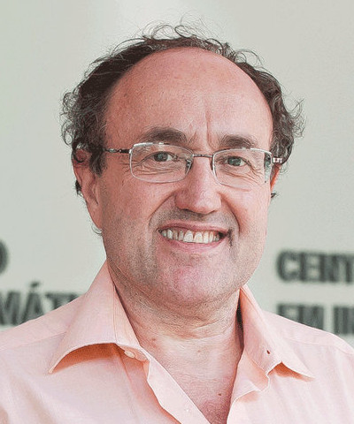
Dante Augusto Barone é doutor em Ciência da Computação pelo Instituto Nacional Politécnico de Grenoble(INPG), França e tem mestrado e graduação em Engenharia Elétrica, pela USP e pela UFRGS, respectivamente. Atualmente coordena o Programa de Pós-Graduação em Informática na Educação da UFRGS. Suas áreas de interesse incluem Aprendizado de Máquina, Processamento de Linguagem Natural e Ética em Inteligência Artificial. Contribuiu e liderou projeto de cooperação com a Petrobrás para o desenvolvimento de robô, o qual recebeu o prêmio de inovação em 2021. Neste livro, colaborou com o capítulo Perguntas e Respostas.
Diana Santos 📨️

Diana Santos é formada em Engenharia Eletrotécnica e de Computadores em 1985, com mestrado na mesma área com tese em tradução automática em 1988, e doutorada em Engenharia Informática em 1996 com uma tese em semântica computacional, todos pelo Instituto Superior Técnico, Lisboa. Desde 1998 que trabalha para o processamento computacional da língua portuguesa no mundo, sendo líder da Linguateca desde 2000. Desde 2011 que é professora na Universidade de Oslo em Linguística Portuguesa, e também leciona ou lecionou Tradução, Estatística, e Humanidades Digitais. Os seus interesses são quase todas as áreas do PLN, e avaliação em geral. Neste livro, colaborou com o capítulo Avaliação conjunta em português.
Diego Raphael Amancio 📨️

Diego Raphael Amancio é doutor em Física Computacional pela USP (2013), tendo realizado estágios de pós-doutorado na própria USP (2014) e na Indiana University, nos Estados Unidos (2018). Atualmente, é professor associado (livre-docente) e pesquisador do ICMC/USP. Possui experiência na área de Ciência da Computação, com ênfase em Redes Complexas, Cienciometria, Aprendizado de Máquina e PLN. Seus interesses de pesquisa incluem a modelagem de sistemas reais por meio de grafos, com destaque para a representação e análise da linguagem humana. Neste livro, colaborou com o capítulo Redes complexas no processamento de língua natural do português.
Douglas Rodrigues 📨️

Douglas Rodrigues é formado em Informática para Gestão de Negócios pela FATEC/Botucatu, Mestrado (UNESP/Bauru) e Doutorado (UFSCar/São Carlos) em Ciências da Computação. Atualmente, atua como pós-doutorando e pesquisador no Recogna/UNESP. Suas áreas de interesse incluem aprendizado de máquina e otimização matemática. Neste livro, colaborou com os Capítulos Sumarização Automática e Treinamento de Grandes Modelos de Linguagem na prática.
Edresson Casanova 📨️
Edresson Casanova é bacharel em Ciência da Computação pela UTFPR, com pós-graduação em inteligência artificial e PLN com foco em processamento de fala no ICMC/USP. Atualmente, é Deep Learning engineer na coqui.ai. Suas áreas de interesse incluem síntese de fala, clonagem de voz, verificação de locutores e reconhecimento automático de fala. Neste livro, colaborou com o capítulo Recursos para o processamento de fala.
Eduardo Cortes 📨️
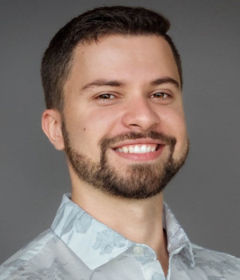
Eduardo Cortes é doutor em Ciência da Computação pela Universidade Federal do Rio Grande do Sul (UFRGS), com experiência na área de Inteligência Artificial, com ênfase em Sistemas de Question Answering, Processamento de Linguagem Natural (PLN) e Aprendizado de Máquina (AM). Atualmente, atua como pesquisador em um projeto conjunto entre a Unisinos e a SAP, focado em PLN. Neste livro, colaborou com o capítulo Perguntas e Respostas.
Elisa Terumi Rubel Schneider 📨️

Elisa Terumi é formada em Informática pela Universidade Tecnológica Federal do Paraná (UTFPR), com especialização em Desenvolvimento Web (PUCPR), mestrado em Bioinformática (UFPR) e doutorado em Informática atuando na linha de pesquisa de Inteligência Artificial (PUCPR). Tem interesse em PLN aplicado na área de saúde. Neste livro, colaborou com os Capítulos Ferramentas e recursos para o processamento sintático e PLN na Saúde.
Ellen Souza 📨️
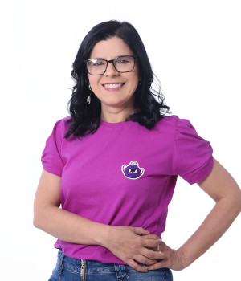
Ellen Souza é formada em Ciência da Computação com doutorado em inteligência artificial pelo CIn/UFPE e pós-doutoranda na área de processamento de textos legislativos no ICMC-USP desde 2020. É docente do curso de Bacharelado em Sistemas de Informação da UFRPE desde 2009. Suas áreas de interesse incluem aprendizado de máquina, recuperação de informação e reconhecimento de entidades nomeadas. Neste livro, colaborou com o capítulo Reconhecimento de Entidades Nomeadas no Domínio Legal.
Eloize Rossi Marques Seno 📨️
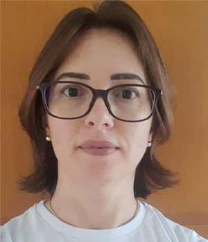
Eloize Seno é Bacharel em Análise e Desenvolvimento de Sistemas pela UNILINS, com mestrado em inteligência artificial e PLN pelo Programa de Pós-graduação em Ciência da Computação da UFSCar e doutorado em inteligência artificial e PLN pelo ICMC/USP. É docente no Instituto Federal de São Paulo desde 2011. Suas áreas de interesse incluem sumarização automática, tradução automática, análise semântica e mineração de opinião. Neste livro, colaborou com os Capítulos Semântica com técnicas simbólicas e Semântica distribucional.
Evandro Fonseca 📨️
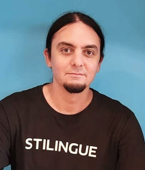
Evandro Fonseca possui graduação em Ciência da Computação (2011) pela Universidade Católica de Pelotas (UCPEL), mestrado (2014) e doutorado (2018) em Ciência da Computação, com foco em PLN, pela Pontifícia Universidade Católica do Rio Grande do Sul (PUCRS). Atualmente atua como Team Lead | AI/NLP Specialist na Blip. Neste livro, colaborou com o capítulo Resolução de correferência.
Evelin Amorim 📨️

Evelin Amorim é formada em Ciência da Computação pela Universidade Federal do Espírito Santo (UFES), com doutorado em Ciência da Computação pela Universidade Federal de Minas Gerais (UFMG). É pesquisadora no INESC TEC, em Portugal, desde 2020. Suas áreas de interesse incluem correção automática de redações e extração de informação. Neste livro, colaborou com o capítulo Classificação de texto.
Fátima Farrica 📨️

Fátima Farrica é doutorada em História pela Universidade de Évora (Portugal), com pós-graduação em Ciências Documentais: Arquivologia. É bolseira de investigação do CIDEHUS-Universidade de Évora (Portugal). As suas áreas de interesse incluem a investigação na área da História, projetos de arquivística, paleografia e tratamento documental. Neste livro, colaborou com o capítulo PLN e Humanidades Digitais.
Felipe Ribas Serras 📨️
Felipe Ribas Serras é Bacharel em Física pelo Instituto de Física da Universidade de São Paulo (USP) e Mestre em Ciência da Computação pelo Instituto e Matemática e Estatística da USP. Suas áreas de interesse incluem complexidade de linguagem e abordagens computacionais à variação linguística e tipologia. Neste livro, colaborou com os capítulos Complexidade Textual e suas Tarefas Relacionadas, O papel dos dados no pré-treinamento de Grandes Modelos de Linguagem.
Fernanda Olival 📨️
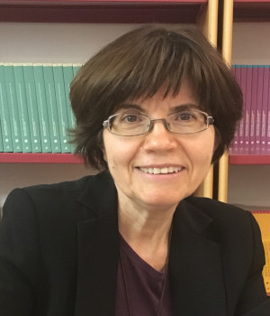
Fernanda Olival é doutorada em História pela Universidade de Évora (Portugal), onde leciona desde 1991. É também diretora do CIDEHUS (Portugal). Trabalha sobre História Social e Política do período Moderno. Interessa-se por Processamento de Linguagem Natural (PLN) como ferramenta para anotar, gerir e recuperar informação, a partir de fontes históricas. Neste livro, colaborou com o capítulo PLN e Humanidades Digitais.
Flaviane Romani Fernandes Svartman 📨️

Flaviane Svartman possui graduação e doutorado em Linguística pela Unicamp, com período de estágio de doutorado na Faculdade de Letras da Universidade de Lisboa e pós-doutorado também pela Unicamp. Atua como docente na área de Filologia e Língua Portuguesa na Faculdade de Filosofia, Letras e Ciências Humanas da USP desde 2010. Suas investigações concernem ao estudo da fonologia e da fonética da língua portuguesa, com especial interesse na prosódia, na interface sintaxe-fonologia, na comparação entre variedades africanas, brasileiras e europeias do português e no PLN. Neste livro, colaborou com os Capítulos Recursos para o processamento de fala e Classificação de Áudio aplicada à Saúde.
Gabriel Lino Garcia 📨️

Gabriel Lino Garcia é graduado em Análise e Desenvolvimento de Sistemas pela FATEC e mestre em Inteligência Artificial (IA) e Processamento de Linguagem Natural (PLN) pela UNESP, onde faz doutorado focado na aplicação de modelos de linguagem na área médica. Seus interesses incluem aprendizado de máquina, grandes modelos de linguagem, aprendizado multimodal e aplicações médicas. Neste livro, colaborou com os Capítulos Sumarização Automática e Treinamento de Grandes Modelos de Linguagem na prática.
Gabriela Alves Lachi 📨️
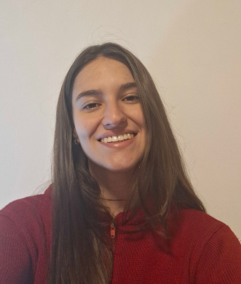
Gabriela Alves Lachi é graduanda em Letras pela Universidade de São Paulo (USP). Suas áreas de interesse em Processamento de Linguagem Natural envolvem a construção e o desenvolvimento de corpus, bem como o treinamento e a avaliação de grandes modelos de linguagem. Neste livro, colaborou com o capítulo O papel dos dados no pré-treinamento de Grandes Modelos de Linguagem.
Helena Freire Cameron 📨️

Helena Freire Cameron é doutora em Linguística pela Universidade de Aveiro (Portugal) e pós-doutora em Humanidades Digitais e PLN pela Universidade de Évora (Portugal). Integrou vários projetos de investigação em Linguística Computacional (EUROTRA, DIGRAMA, Corpus Lexicográfico do Português, entre outros). É investigadora do CIDEHUS-Universidade de Évora (Portugal), onde integra um grupo multidisciplinar de Humanidades Digitais, envolvendo História, Linguística e Computação-PLN. Nos anos mais recentes tem-se dedicado ao estudo da variação ortográfica no século XVIII, do ponto de vista linguístico e computacional-PLN. Neste livro, colaborou com o capítulo PLN e Humanidades Digitais.
Heliana Mello 📨️

Heliana Mello é formada em Letras pela Universidade Federal de Minas Gerais (UFMG), com doutorado em Linguística pela CUNY. É docente na UFMG desde 1998. Suas áreas de interesse incluem métodos empíricos e quantitativos para a análise da linguagem, compilação e estudo de corpora de fala. Neste livro, colaborou com o capítulo Texto ou fala?.
Hidelberg O. Albuquerque 📨️

Hidelberg Albuquerque é formado em Análise e Desenvolvimento de Sistemas pelo Instituto Federal da Paraíba (IFPB), com pós-graduação pelo PPGI/UFPB, e atualmente doutorando em Ciência da Computação no Cin/UFPE. É docente na Unidade Acadêmica de Serra Talhada (UAST)/UFRPE desde 2015. Suas áreas de interesse incluem aprendizado de máquina, reconhecimento de entidade nomeada (NER), sumarização e recuperação de informação. Neste livro, colaborou com o capítulo Reconhecimento de Entidades Nomeadas no Domínio Legal.
Ivandré Paraboni 📨️

Ivandré Paraboni é doutor em Ciência da Computação pela University of Brighton (Inglaterra, 2003), com estágio de pós-doutorado junto à University of Aberdeen (Escócia, 2012). É professor associado (livre docente) e pesquisador da USP/EACH. Possui experiência na área de Ciência da Computação, atuando principalmente nas áreas de PLN e IA. Interesses de pesquisa abrangem o processamento da língua humana em um sentido amplo do termo, incluindo métodos computacionais derivados das Ciências Cognitivas e aplicações práticas de classificação de documentos extraídos da WEB. Neste livro, colaborou com os Capítulos Geração de linguagem natural e Detecção de Transtornos de Saúde Mental a partir de Texto.
Jackson Wilke da Cruz Souza 📨️

Jackson Souza é bacharel (2012), mestre (2015) e doutor (2019) em Linguística pela Universidade Federal de São Carlos (UFSCar). Atualmente, é professor da Universidade Federal da Bahia (UFBA), atuando junto ao Departamento de Ciência, Tecnologia e Inovação e ao Programa de Pós-Graduação em Língua e Cultura da UFBA. Tem interesse nas áreas de análise de discurso, sumarização automática e análise e descrição linguística. Neste livro, colaborou com os Capítulos Modelos discursivos e Sumarização Automática.
Jessica Rodrigues 📨️

Jessica Rodrigues tem graduação e mestrado em Ciência da Computação, sendo o mestrado focado em machine learning e natural language processing, pela Universidade Federal de São Carlos (UFSCar). A experiência acadêmica continua com o PhD em social data science pela University of Oxford, com foco em AI safety, fairness and biases in language models. Jessica também é Lead Data Scientist e é especialista em AI aplicada. Neste livro, colaborou com os Capítulos Semântica distribucional e Modelos de linguagem.
João Paulo Papa 📨️
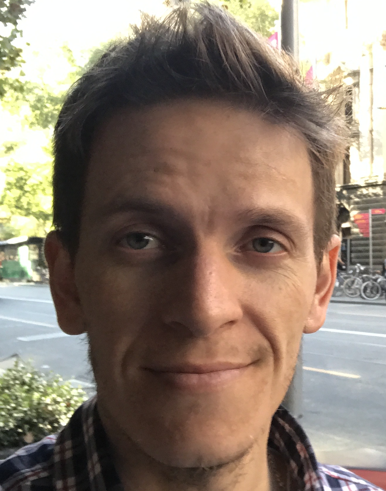
João Paulo Papa é formado em Sistemas de Informação pela UNESP, com pós-graduação em processamento de imagens e aprendizado de máquina pela UFSCar e Unicamp, respectivamente. Possui pós-doutorados na Unicamp, Harvard e MIT. É professor titular da Unesp onde atua desde 2009 e suas áreas de interesse incluem visão computacional, processamento de imagens, aprendizado de máquina e aprendizado multimodal. Neste livro, colaborou com os Capítulos Sumarização Automática e Treinamento de Grandes Modelos de Linguagem na prática.
João Renato Ribeiro Manesco 📨️
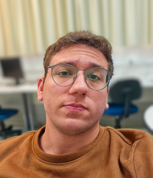
João Renato Ribeiro Manesco é doutorando em Ciência da Computação pela UNESP, onde também concluiu mestrado e graduação. Durante o mestrado, realizou estágio de pesquisa no Media Integration and Communication Center da Universidade de Florença, Itália. Seus interesses de pesquisa incluem adaptação de domínio, modelos de linguagem generativos e multimodais, e aplicações em contexto médico. Neste livro, colaborou com os Capítulos Sumarização Automática e Treinamento de Grandes Modelos de Linguagem na prática.
João Vitor Mariano Correia 📨️

João Vitor Mariano Correia é bacharel em Ciência da Computação pela UNESP, onde atualmente cursa o mestrado no Programa de Pós-Graduação em Ciência da Computação. Seus principais interesses de pesquisa estão na área de Processamento de Linguagem Natural (PLN), com foco em representações de conhecimento. Neste livro, colaborou com os Capítulos Sumarização Automática e Treinamento de Grandes Modelos de Linguagem na prática.
Joaquim Santos 📨️

Joaquim Santos fez licenciatura em Matemática na Universidade Regional do Cariri (URCA), é mestre em Ciência da Computação pela PUCRS e atualmente é estudante de doutorado no programa de Computação Aplicada da UNISINOS. Tem trabalhado intensamente com Processamento de Linguagem Natural (PLN) em problemas de extração de informação, modelos de linguagem e bases de conhecimento. Neste livro, colaborou com o capítulo Extração de Informação.
Kenzo Sakiyama 📨️

Kenzo Sakiyama é formado em Engenharia de Computação pela Universidade Federal do Mato Grosso do Sul (UFMS), com mestrado em Ciência da Computação pelo ICMC/USP. Atualmente possui um doutorado em andamento também no ICMC/USP. Suas áreas de interesse incluem redes neurais profundas, mineração de texto em redes sociais e grafos. Neste livro, colaborou com o capítulo Geração Automática de Ementas Jurídicas.
Laila Mota 📨️
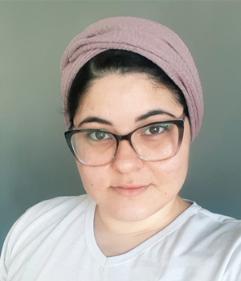
Laila Mota é formada em Ciência e Tecnologia pela Universidade Federal da Bahia (UFBA), com pós-graduação em Tecnologia da Informação pela UFBA. Suas áreas de interesse incluem aprendizado de máquina, linguística computacional e modelos de linguagem. Neste livro, colaborou com o capítulo Semântica distribucional.
Larissa Cristina Berti 📨️
Larissa Berti é formada em Fonoaudiologia pela UNESP de Marília, com doutorado em Linguística pela Unicamp. É docente do Departamento de Fonoaudiologia da UNESP desde 2009. Sua área de pesquisa é produção e percepção da fala, além do uso de métodos instrumentais na análise de fala. Neste livro, colaborou com o capítulo Classificação de Áudio aplicada à Saúde.
Larissa A. de Freitas 📨️

Larissa Freitas é doutora em Ciência da Computação pela PUCRS (2015). Atualmente é professa da Universidade Federal de Pelotas (UFPel). Suas áreas de interesse incluem análise de sentimento, ontologias, chatbots, detecção de sarcasmo/ironia, detecção de discurso de ódio e detecção de notícias falsas. Neste livro, colaborou com o capítulo PLN em Redes Sociais.
Lilian Mie Mukai Cintho 📨️

Lilian Mie Mukai Cintho é formada em Enfermagem e Obstetrícia pela Universidade Federal de São Carlos (UFSCar), com pós-graduação em Tecnologia em Saúde na PUCPR. É docente colaboradora na Universidade Estadual de Ponta Grossa (UEPG). Suas áreas de interesse incluem, gerenciamento de programas de promoção à saúde, enfermagem médico cirúrgica e informática em saúde. Neste livro, colaborou com o capítulo PLN na Saúde.
Lívia Vicente Dutra 📨️

Lívia Vicente Dutra é formada em Letras pela Universidade Federal de Juiz de Fora (UFJF) e mestre em Tecnologia Linguística pela Universidade de Gotemburgo, onde atualmente é doutoranda no programa de Multilinguismo. É também pesquisadora do Laboratório FrameNet Brasil. Seus interesses de pesquisa incluem Semântica de Frames e Processamento de Linguagem Natural (PLN). Neste livro, colaborou com o capítulo PLN e Responsabilidade Social.
Lucas Daniel Volpiano Figueiredo 📨️
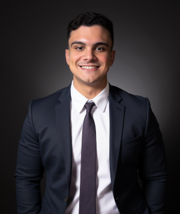
Lucas Daniel Volpiano Figueiredo é graduando em Sistemas de Informação pelo ICMC-USP. Foi estagiário de Inteligência Artificial no IFSC-USP por oito meses, atuando com implementação e pesquisa. Suas áreas de interesse incluem: PLN, aprendizado de máquina e inteligência artificial. Neste livro, colaborou com o capítulo Redes complexas no processamento de língua natural do português.
Lucas Lasota 📨️

Lucas Lasota é mestre e doutor pela Universidade RUDN de Moscou com o doutorado reconhecido pela USP. É pesquisador e docente do Just Transition Center da Universidade de Halle-Wittenberg na Alemanha. É pesquisador associado do Weizenbaum Institute for the Networked Society de Berlin. Advogado inscrito na OAB-SP/432126. Sua pesquisa se concentra em medidas regulatórias de tecnologias digitais e seu impacto sobre direitos individuais e coletivos, bem como governança da internet, telecomunicações e direito contratual internacional. Neste livro, colaborou com o capítulo Responsabilidade no desenvolvimento e uso de tecnologias de linguagem baseadas em IA.
Lucelene Lopes 📨️
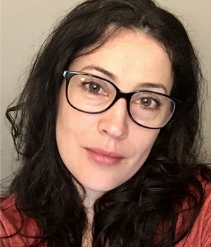
Lucelene Lopes é doutora em Ciência da Computação pela PUCRS (2012). Consultora Empresarial na área de Processamento de Linguagem Natural (PLN) desde 2016, e desde 2021 é pesquisadora no ICMC/USP, vinculada ao C4AI. Suas áreas de interesses incluem PLN, aprendizado de máquina, parsing e modelos de linguagem. Neste livro, colaborou com os Capítulos Sequência de caracteres e palavras e Ferramentas e recursos para o processamento sintático.
Marcelo Finger 📨️
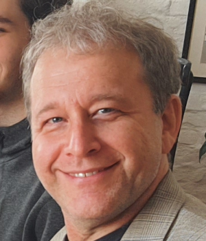
Marcelo Finger é professor titular de Ciência da Copmputação no IME-USP, Pesquisador Principal do Centro de Inteligência Artificial USP-IBM-FAPESP C4AI, com interesses em Geração de Recursos de Processamento de Linguagem Natural (PLN), uso de PLN para a área de Saúde, estudo e interpretabilidade de redes neurais. Neste livro, colaborou com os Capítulos Complexidade Textual e suas Tarefas Relacionadas, Classificação de Áudio aplicada à Saúde e O papel dos dados no pré-treinamento de Grandes Modelos de Linguagem.
Marcelo Matheus Gauy 📨️

Marcelo Gauy é Bacharel em Matemática pela Universidade de São Paulo (USP), com mestrado na área de Combinatória pela USP e doutorado em Inteligência Artificial pelo ETH Zuerich, na Suíça. É docente na UNESP desde 2025. Suas áreas de interesse incluem aprendizado profundo, computação bioinspirada, processamento de áudio, combinatória e processos estocásticos. Neste livro, colaborou com o capítulo Classificação de Áudio aplicada à Saúde.
Maria Cristina Ferreira de Oliveira 📨️

Cristina Oliveira é formada em Ciência da Computação pelo ICMC/USP (1985), com pós-graduação em Electronic Engineering pela University of Wales, Bangor, no Reino Unido (1990). É docente do ICMC, no Departamento de Ciências da Computação, desde 1986, como Professora Titular desde 2008. Atua em Ciência da Computação, em projetos de pesquisa que atualmente se concentram nos seguintes temas: visualização de informação, mineração visual de dados, análise visual de dados e aplicações. Neste livro, colaborou com o capítulo Redes complexas no processamento de língua natural do português.
Maria José Bocorny Finatto 📨️

Maria José Bocorny Finatto é linguista especializada em Estudos do Léxico e Terminologia. Investiga a história das terminologias médicas e modos de aplicar técnicas da Linguagem Simples para maior acessibilidade das informações escritas para diferentes perfis de pessoas no Brasil. Análise textual com recursos PLN é seu foco. Orientadora de mestrado e doutorado junto à Universidade Federal do Rio Grande do Sul (UFRGS). Neste livro, colaborou com os Capítulos Sequência de caracteres e palavras, PLN no Direito e PLN e Humanidades Digitais.
Mariana Lourenço Sturzeneker 📨️
Mariana Lourenço Sturzeneker é graduada em Letras pela Universidade de São Paulo. Faz parte da equipe de desenvolvimento do Córpus Carolina no C4AI (Center for Artificial Intelligence - IBM/USP) desde 2020. Seu interesse principal é na área de construção de córpus. Neste livro, colaborou com o capítulo O papel dos dados no pré-treinamento de Grandes Modelos de Linguagem.
Mariane de Carvalho Pinto 📨️
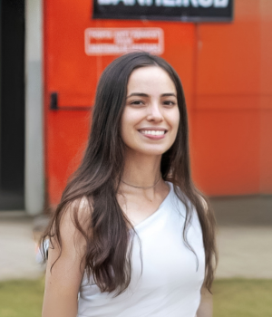
Mariane Carvalho é graduada em Letras pela Universidade Federal de Juiz de Fora (UFJF), onde cursa o mestrado em Linguística Cognitiva e Computacional. Seu trabalho de pesquisa envolve a geração de roteiros de audiodescrição por Inteligência Artificial (IA), com base na Semântica de Frames e na anotação multimodal. É vinculada ao projeto FrameNet Brasil. Neste livro, colaborou com o capítulo PLN e Responsabilidade Social.
Mariza Ferro 📨️

Mariza Ferro é formada em Ciência da Computação pela UNIOESTE, com mestrado em Inteligência Artificial no ICMC/USP e doutorado em Modelagem Computacional pelo LNCC. É docente do Instituto de Computação da Universidade Federal Fluminense (UFF) e coordenadora do Núcleo de Referência em IA Ética e Confiável desde 2020. Suas áreas de interesse incluem IA ética, IA verde e sustentável, IA para o estar social e aprendizado de máquina para predição de eventos extremos. Neste livro, colaborou com o capítulo Questões éticas em IA e PLN.
Marli Quadros Leite 📨️

Marli Quadros Leite é Professora Titular do Departamento de Letras Clássicas e Vernáculas (FFLCH | USP) e atua como pesquisadora nas áreas de análise do Discurso Oral e na de História das Ideias Linguísticas. Atualmente é Pró-Reitora de Cultura e Extensão Universitária da USP. Neste livro, colaborou com o capítulo Recursos para o processamento de fala.
Marlo Souza 📨️

Marlo Souza é formado em Ciência da Computação pela Unifacs e em Matemática pela Universidade Federal da Bahia (UFBA), com pós-graduação em PLN e Lógica pela PUC-RS e UFRGS, respectivamente. Atualmente, é professor adjunto na UFBA e co-líder do grupo de pesquisa FORMAS. Tem interesse em pesquisas nas áreas de semântica computacional, extração de informação e modelos de representação de conhecimento em PLN. Neste livro, colaborou com o capítulo Extração de Informação.
Matheus Cerqueira 📨️

Matheus Cerqueira é Técnico em Informática pelo Instituto Federal do Paraná (IFPR) de Jacarezinho-PR e graduando em Ciências de Computação pelo ICMC/USP desde 2020. Atualmente, também é estagiário em Engenharia de Software na Google. Suas áreas de interesse incluem Aprendizado de Máquina e, mais especificamente, Processamento de Linguagem Natural (PLN) e Visão Computacional. Neste livro, colaborou com o capítulo Reconhecimento de Entidades Nomeadas no Domínio Legal.
Maucha Andrade Gamonal 📨️

Maucha Gamonal atua como residente de pós-doutorado na Universidade Federal de Juiz de Fora (UFJF). É pesquisadora vinculada ao Projeto FrameNet Brasil desde 2009. Suas áreas de interesse incluem Linguística Cognitiva, Semântica de Frames e Linguística Computacional. É curiosa sobre a produção de sentido na linguagem humana e gosta de plantas, crianças, ar fresco e de seu golden retriever Luke. Neste livro, colaborou com o capítulo PLN e Responsabilidade Social.
Mayara Feliciano Palma 📨️
Mayara Feliciano Palma é Bacharel em Letras (português e espanhol) pela FFLCH-USP (2021). Entre suas áreas de interesse estão a construção de corpora e agentes. Neste livro, colaborou com o capítulo O papel dos dados no pré-treinamento de Grandes Modelos de Linguagem.
Miguel de Mello Carpi 📨️

Miguel de Mello Carpi é Bacharel em Ciência da Computação pelo Instituto de Matemática e Estatística da Universidade de São Paulo. Suas áreas de interesse incluem inteligência artificial e processamento de linguagem natural. Neste livro, colaborou com o capítulo O papel dos dados no pré-treinamento de Grandes Modelos de Linguagem.
Nádia Félix Felipe da Silva 📨️
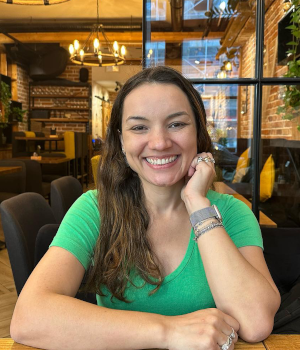
Nádia Félix é formanda em Ciência da Computação pela Universidade Federal de Goiás (UFG), com pós-graduação em Inteligência Computacional no ICMC/USP. É docente na UFG desde 2016. Suas áreas de interesse incluem Aprendizado de Máquina, Processamento de Linguagem Natural (PLN) e Aprendizado Multimodal. Neste livro, colaborou com o capítulo Reconhecimento de Entidades Nomeadas no Domínio Legal.
Nataly Leopoldina Patti da Silva 📨️
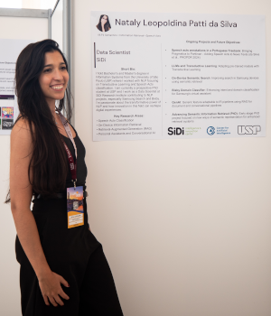
Nataly Patti é bacharel e mestre em Sistemas de Informação pela Universidade de São Paulo (USP), onde desenvolveu pesquisas em PLN com foco em Aprendizado Transdutivo e classificação de Atos de Fala. Atualmente, é aluna especial de doutorado na USP e atua como Cientista de Dados no Instituto de Pesquisas SiDi, contribuindo com projetos de PLN, especialmente no Samsung Search e na Bixby. Suas áreas de interesse incluem PLN, aprendizado de máquina e recuperação de informação. Neste livro, colaborou com o capítulo Aprendizado Transdutivo em PLN.
Norton Trevisan Roman 📨️
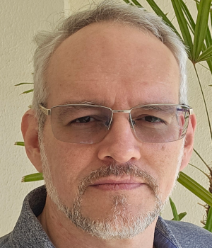
Norton Trevisan Roman é Bacharel em Física, com Mestrado e Doutorado em Ciência da Computação com foco em PLN, todos pela Unicamp, possuindo também Livre-Docência pela USP. Docente na EACH-USP desde 2010, suas áreas de interesse incluem Processamento de Língua Natural e aplicações de PLN e IA a diversas tarefas, indo desde o tratamento de emoção e sentimento à predição do mercado financeiro. Neste livro, colaborou com o capítulo Aprendizado Transdutivo em PLN.
Osvaldo Novais de Oliveira Jr. 📨️

Osvaldo Novais de Oliveira Jr. é físico, professor do Instituto de Física da Universidade de São Paulo (USP) de São Carlos, e um dos membros fundadores do Núcleo Interinstitucional de Linguística Computacional (NILC). Suas áreas de interesse são a ciência dos materiais, além de PLN. Neste livro, colaborou com o capítulo Redes complexas no processamento de língua natural do português.
Paula Christina Figueira Cardoso 📨️

Paula Figueira Cardoso tem graduação em Informática pelo ILES de Santarém, mestrado em Engenharia Elétrica pela Universidade Federal do Pará (UFPA) e doutorado pelo Instituto de Ciências Matemáticas e de Computação (ICMC) – USP/São Carlos. Atualmente é docente na UFPA. Suas áreas de interesse incluem geração de textos, sumarização automática, tecnologias educacionais e pesquisas aplicadas na área de interface homem-máquina. Neste livro, colaborou com os Capítulos Modelos discursivos e Sumarização Automática.
Pedro Henrique Paiola 📨️

Pedro Henrique Paiola é mestre e doutorando em Ciência da Computação pela UNESP, onde também atua como professor substituto desde 2022. É pesquisador no projeto RADIAR, desenvolvido em parceria com a Petrobras. Suas áreas de interesse incluem sumarização automática, modelos de linguagem e avaliação automática de texto. Neste livro, colaborou com os Capítulos Sumarização Automática e Treinamento de Grandes Modelos de Linguagem na prática.
Priscila Osório Côrtes 📨️

Priscila Osório Côrtes é formada em Letras Alemão/Português pela Universidade Federal de Minas Gerais (UFMG) e mestre em linguística pela Albert Ludwigs-Universität Freiburg, Alemanha. Trabalha há mais de 7 anos na área de Processamento de Linguagem Natural (PLN), e há mais de 5 com processamento de fala na empresa SiDi Campinas. Neste livro, colaborou com o capítulo Texto ou fala?.
Priscilla de Abreu Lopes 📨️

Priscilla de Abreu Lopes é formada em Ciência da Computação pela Universidade Federal de São Carlos (UFSCar), com pós-graduação em inteligência artificial no PPGCC/UFSCar. Suas áreas de interesse incluem Aprendizado de Máquina (AM) e Processamento de Linguagem Natural (PLN). Neste livro, colaborou com o capítulo Correção Automática de Redação.
Raphael Montanari 📨️

Raphael Montanari é formado em Ciências de Computação pela Universidade de São Paulo (USP), com pós-graduação em Inteligência Artificial (IA) e robótica no ICMC/USP. É servidor na USP desde 2013. Suas áreas de interesse incluem aprendizado de máquina, visão computacional e aplicações de Processamento de Linguagem Natural (PLN) para robótica. Neste livro, colaborou com o capítulo Geração Automática de Ementas Jurídicas.
Renata Ramisch 📨️

Renata Ramisch é formada em Letras pela Universidade Federal do Rio Grande do Sul (UFRGS) e mestre em Linguística pela Universidade Federal de São Carlos (UFSCar). É linguista na Redação Nota 1000, que faz parte do grupo Somos Educação. Suas áreas de interesse incluem correção automática de redações e tratamento computacional de expressões multipalavras. Neste livro, colaborou com o capítulo Expressões multipalavras.
Renata Vieira 📨️

Renata Vieira é PhD em Informática e Ciências Cognitivas pela Universidade de Edimburgo, Escócia. É pesquisadora da área de Processamento de Linguagem Natural (PLN) atuando em diversas áreas de aplicação. É investigadora principal convidada do Centro de História, Culturas e Sociedades da Universidade de Évora (Portugal) e conselheira científica do Instituto de Inteligência Artificial na Saúde. Neste livro, colaborou com os Capítulos Resolução de correferência, Perguntas e Respostas, Extração de Informação e PLN e Humanidades Digitais.
Renato Moraes Silva 📨️
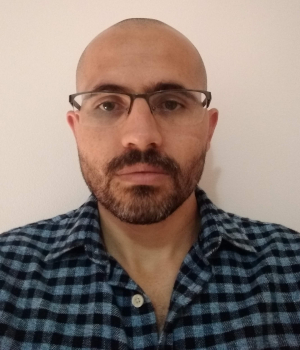
Renato Moraes Silva é graduado em Licenciatura Plena em Informática pela UFMT (2010) e Mestre (2013) e Doutor (2017) em Engenharia Elétrica pela Unicamp. Foi pesquisador de pós-doutorado pela UFSCar/Sorocaba (2017-2021) e professor e pesquisador no Centro Universitário Facens (2021-2024). Atualmente, é docente no ICMC/USP. Sua pesquisa é voltada para o PLN, com ênfase em aplicações como análise de sentimentos, detecção de spam, classificação de mensagens instantâneas e identificação de fake news. Além disso, desenvolveu pesquisas que aplicam aprendizado de máquina a problemas de visão computacional e estudos que utilizam análises de dados no contexto do setor financeiro. Neste livro, colaborou com o capítulo Detecção Automática de Notícias Falsas.
Ricardo Marcacini 📨️
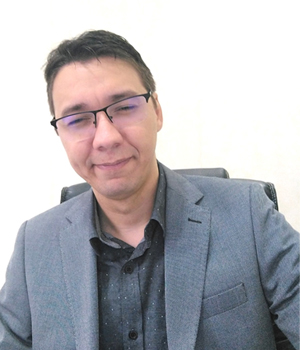
Ricardo Marcacini é formado em Informática pela Universidade de São Paulo (USP), com pós-graduação em ciência de computação e matemática computacional no ICMC/USP. Atualmente é docente do Departamento de Ciências de Computação (SCC) do ICMC/USP. Realiza pesquisa na área de aprendizado de máquina, com foco em mineração de textos, análise de eventos e análise de sentimentos. Neste livro, colaborou com o capítulo Recursos para o processamento de fala.
Roana Rodrigues 📨️

Roana Rodrigues é formada em Letras, mestra e doutora em Linguística pela Universidade Federal de São Carlos (UFSCar). É docente do Departamento de Letras Estrangeiras da Universidade Federal de Sergipe (UFS). Suas áreas de interesse incluem sintaxe, semântica, estudos do léxico e Processamento de Linguagem Natural (PLN). Neste livro, colaborou com o capítulo Modelos discursivos.
Rodrigo Nogueira 📨️

Rodrigo Nogueira é formado em Engenharia Elétrica pela UNICAMP e possui doutorado em Ciência da Computação pela Universidade de Nova York (NYU). Ao longo de sua carreira, Nogueira contribuiu para os campos de Recuperação de Informação e PLN através da criação de modelos como BERTimbau, doc2query, monoT5, e mais recentemente, os modelos Sabiá 1, 2 e 3, que são LLMs especializados no Brasil. Nogueira é o fundador e CEO da Maritaca AI, uma empresa especializada no desenvolvimento de LLMs especializados no Brasil. Neste livro, colaborou com o capítulo Geração Automática de Ementas Jurídicas.
Roney Lira de Sales Santos 📨️
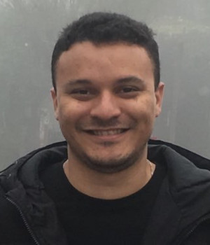
Roney Santos é formado em Ciência da Computação pela Universidade Federal do Piauí (UFPI) em 2014, com mestrado em Processamento de Linguagem Natural (PLN) na UFPI e doutorado em PLN no ICMC/USP. É docente no ICTI/UFBA desde 2023. Suas áreas de interesse incluem inteligência arttificial, aprendizado de máquina, PLN e detecção de conteúdo enganoso. Neste livro, colaborou com o capítulo Detecção Automática de Notícias Falsas.
Roseli A. F. Romero 📨️
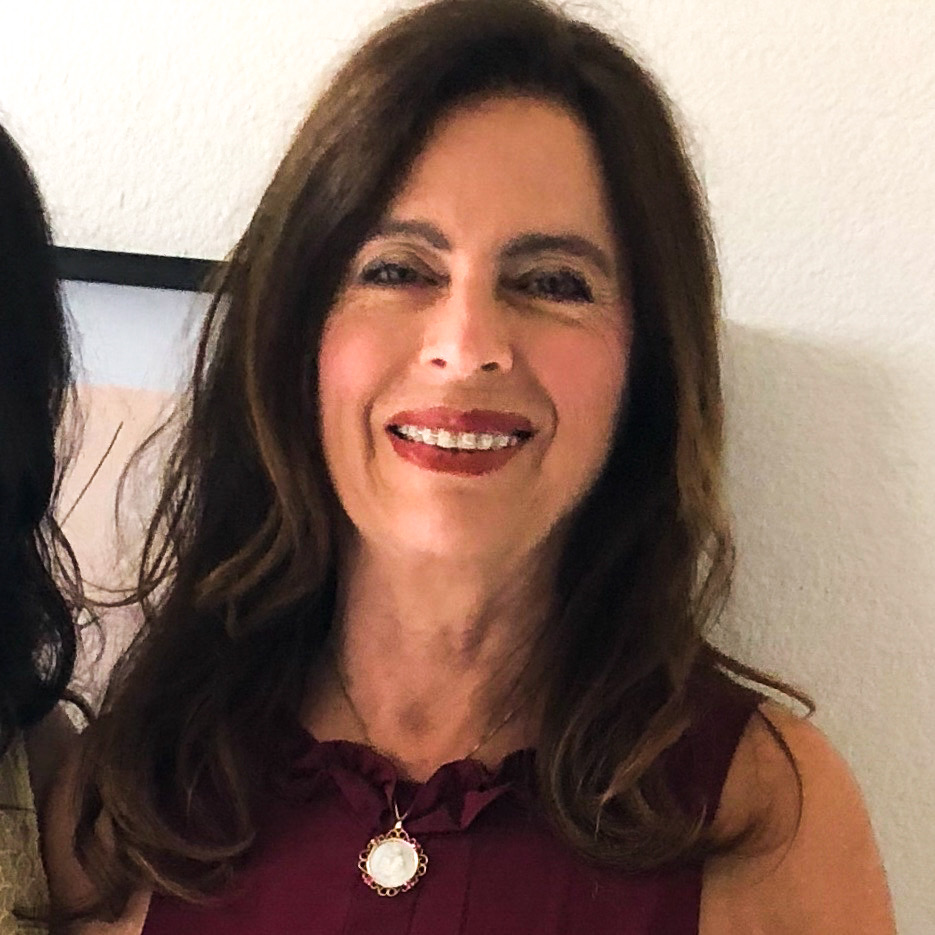
Roseli A. F. Romero fez graduação e Mestrado no ICMC-USP e Doutorado na FEEC-UNICAMP. É professora titular do ICMC-USP desde 2013 e trabalha na área de inteligência artificial há 30 anos. Suas áreas de interesse incluem aprendizado de máquina, aprendizado profundo, com aplicação nas áreas de visão computacional, educação, meio ambiente, robótica e direito. Neste livro, colaborou com o capítulo Geração Automática de Ementas Jurídicas.
Roseval Donisete Malaquias Junior 📨️

Roseval Donisete Malaquias Junior é bacharel em Ciência da Computação pela Universidade Federal de São Carlos (UFSCar) e mestrando em Ciência da Computação e Matemática Computacional no ICMC/USP. É pesquisador na Maritaca AI desde 2024. Suas áreas de interesse incluem aprendizado de máquina, grandes modelos de linguagem e pré-treinamento contínuo. Neste livro, colaborou com o capítulo Geração Automática de Ementas Jurídicas.
Sandra Maria Aluísio 📨️

Sandra Maria Aluísio é formada em Ciência da Computação pela UFSCar, com Doutorado em IA e PLN, pela USP. Foi docente de 1988 a 2018, no ICMC/USP, onde hoje atua no Programa Professor Sênior. As áreas de interesse incluem linguística de corpus, simplificação textual, recursos semânticos, detecção automática da estrutura do discurso científico e ferramentas de suporte à escrita, análise automática de distúrbios de linguagem, e processamento de fala. Neste livro, colaborou com os Capítulos Recursos para o processamento de fala e Complexidade Textual e suas Tarefas Relacionadas.
Sheila Castilho 📨️
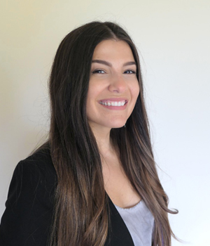
Sheila Castilho é licenciada em Letras pela UNIOESTE. Possui mestrado em PLN pela Universidade do Algarve (PT) e pela University of Wolverhampton (UK). Completou seu doutorado pela Dublin City University em 2016. Atualmente, ela é Assistant Professor na Dublin City University. Seus interesses incluem tradução automática, avaliação automática e humana, tecnologias da tradução, e PLN para tradução. Neste livro, colaborou com o capítulo Tradução Automática.
Sidney Evaldo Leal 📨️
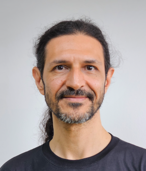
Sidney Leal é pesquisador e cientista de dados no Venturus; pós-doc em Processamento de Fala (Tarsila/C4AI/USP); doutor em Ciências da Computação na área de Inteligência Artificial; MBA em Gestão da Tecnologia da Informação; bacharel em Ciência da Computação e técnico em Processamento de Dados. Atua na indústria desde 1995 em projetos de tecnologia de diversos portes para governos, bancos e multinacionais. Áreas de interesse: aprendizagem de máquina, processamento de linguagem natural, reconhecimento e síntese de fala, complexidade/simplificação de textos e internet das coisas. Neste livro, colaborou com o capítulo Complexidade Textual e suas Tarefas Relacionadas.
Solange Rezende 📨️

Solange Rezende é docente e pesquisadora no Laboratório de Inteligência Computacional (LABIC) do Departamento de Ciências de Computação do ICMC/USP desde 1991. Tem experiência na área de IA, atuando principalmente nos temas relacionados com mineração de dados e textos, análise de sentimentos e sistemas de recomendação. Possui graduação em licenciatura em Ciências Habilitação em Matemática pela UFU (1986), mestrado em Ciências de Computação e Matemática Computacional pela USP (1990) e doutorado em Engenharia Mecânica – São Carlos pela USP (1993). Realizou pós-doutorado na Universidade de Minnesota, USA (1995-1996). Neste livro, colaborou com o capítulo Recursos para o processamento de fala.
Tayane Soares 📨️
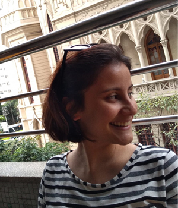
Tayane Soares é Cientista de Dados na empresa Blip, formada em Letras pela UFMG e mestra em Linguística Aplicada pelo PosLin-UFMG. No mestrado, seu trabalho de pesquisa teve como foco a avaliação de viés de gênero em modelos de tradução automática, especificamente no par linguístico inglês-português. Seu interesse de pesquisa abrange a interseção entre linguagem e tecnologia, incluindo linguística computacional, processamento de língua natural e aprendizado de máquina. Além disso, também se interessa em pesquisar e avaliar como a aplicação dessas técnicas em tecnologias digitais afeta a sociedade e as pessoas que as utilizam. Neste livro, colaborou com o capítulo Questões éticas em IA e PLN.
Thiago Castro Ferreira 📨️
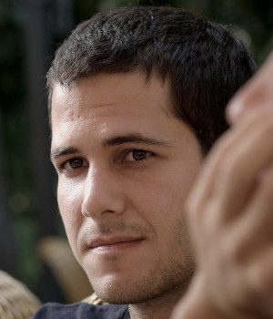
Thiago Castro Ferreira é Bacharel (2008-2012) e Mestre em Ciências (2012-2014) pelo curso de Sistemas de Informação da Universidade de São Paulo. Com foco em Geração de Língua Natural, possui doutorado pela Universidade de Tilburg (2015-2018), e pós-doutorados também pela Universidade de Tilburg (2018-2019) e Universidade Federal de Minas Gerais (2019-2021). Thiago é atualmente um Cientista Aplicado na aiXplain com interesses em Engenharia de Software, Processamento de Linguagem Natural, Aprendizado de Máquina, Modelos de Linguagem e Agentes. Neste livro, colaborou com o capítulo Geração de linguagem natural.
Thiago Alexandre Salgueiro Pardo 📨️
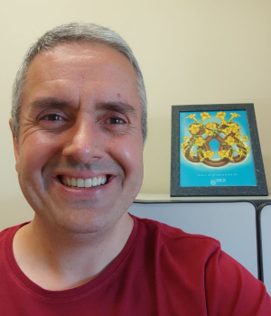
Thiago Alexandre Salgueiro Pardo é formado em Ciências da Computação, com foco em pesquisa em PLN. Fez graduação e Mestrado na UFSCar e doutorado e pós-doutorado no ICMC/USP. É professor titular no ICMC, onde atua desde 2006. Seus interesses incluem análise de sentimentos, detecção de notícias falsas, sumarização de textos e modelos linguístico-computacionais de representação textual e métodos automáticos de análise. Neste livro, colaborou com o capítulo Detecção Automática de Notícias Falsas.
Tiago Timponi Torrent 📨️
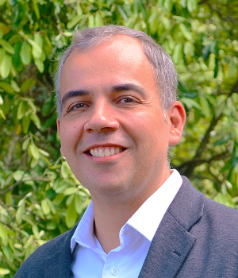
Tiago Torrent é doutor em Linguística pela Universidade Federal do Rio de Janeiro (UFRJ), tendo feito mestrado e graduação em Letras na Universidade Federal de Juiz de Fora (UFJF). É professor do Programa de Pós-Graduação em Linguística e lidera o laboratório FrameNet Brasil da UFJF desde 2010. Seus interesses de pesquisa são modelos de língua aplicados à saúde digital e ao processamento computacional da multimodalidade. Neste livro, colaborou com o capítulo PLN e Responsabilidade Social.
Valéria de Paiva 📨️
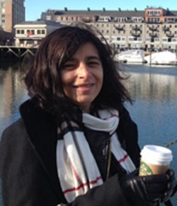
Valeria de Paiva é formada em Matemática pela PUC-Rio, com pós-graduação em Algebra na PUC e e mestrado/doutorado na Universidade de Cambridge, UK. É pesquisadora principal (Principal Researcher) no Topos Institute desde 2021. Suas áreas de interesse incluem semântica de linguagem natural, inferência em linguagem natural, recursos léxico-semânticos e lógica, especialmente lógica categórica. Gosta de sistemas híbridos de PLN, open software, dependências universais e da OpenWordNet-PT. Fundadora de Women in Logic e Lógicas Brasileiras. Neste livro, colaborou com o capítulo Semântica com técnicas simbólicas.
Vanessa Martins do Monte 📨️
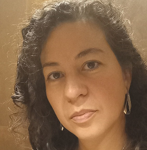
Vanessa Martins do Monte é mestre e doutora em Filologia e Língua Portuguesa pela FFLCH-USP, onde atua como docente desde 2014. Coordena o Projeto M.A.P. – Mulheres na América Portuguesa e integra o C4AI – Centro de Inteligência Artificial da USP, atuando na constituição de corpora para PLN. Suas pesquisas concentram-se em Filologia e Humanidades Digitais. Neste livro, colaborou com o capítulo O papel dos dados no pré-treinamento de Grandes Modelos de Linguagem.
Vinícius G. Santos 📨️

Vinícius G. Santos é graduado, mestre e doutor em Letras pela Universidade de São Paulo. Atualmente realiza pesquisa de pós-doutorado vinculada ao C4AI–USP. Atua na área de descrição e análise linguística de variedades africanas e brasileiras da língua portuguesa, com especial interesse em fonologia, prosódia, entoação e elaboração de recursos para PLN. Neste livro, colaborou com o capítulo Recursos para o processamento de fala.
Vitor Hugo Bridi Dei Santi 📨️
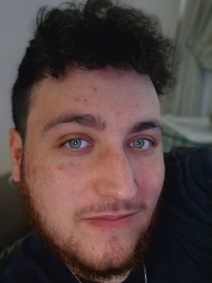
Vitor Hugo Bridi Dei Santi é formado em Física Computacional pela Universidade de São Paulo (USP). Atualmente, é mestrando no Programa de Pós-Graduação em Física Computacional do IFSC-USP. Suas áreas de interesse incluem redes complexas, simulações computacionais e análise de literatura científica por técnicas de PLN e IA. Neste livro, colaborou com o capítulo Redes complexas no processamento de língua natural do português.
Viviane Pereira Moreira 📨️

Viviane P. Moreira é doutora em computação na Middlesex University (2004), Inglaterra, mestre em ciência da computação na Universidade Federal do Rio Grande do Sil (UFRGS, 1999) e bacharel em análise de sistemas na UCPel (1996). É professora na UFRGS e orientadora do Programa de Pós-Graduação em Computação. Sua pesquisa concentra-se em recuperação de informação, Processamento de Linguagem Natural (PLN) e mineração de dados. Neste livro, colaborou com o capítulo Recuperação de Informação.
Vládia Pinheiro 📨️
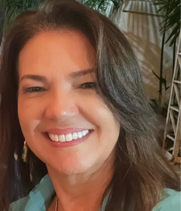
Vládia Pinheiro é formada em Ciência da Computação pela Universidade Federal do Ceará (UFC), com doutorado em Ciência da Computação na mesma universidade. É docente do Programa de Pós-Graduação em Informática Aplicada, na UNIFOR, desde 2011. Suas áreas de interesse incluem recursos semânticos, parsers semânticos, extração de informação, sumarização de textos, chatbots, aplicações de inteligência artificial e ciência de dados. Neste livro, colaborou com o capítulo Semântica com técnicas simbólicas.
Yohan Bonescki Gumiel 📨️
Yohan Bonescki Gumiel é formado em Engenharia de Controle e Automação, com uma carreira dedicada à tecnologia e inovação. Ele fez doutorado na área de PLN voltada a textos clínicos, um campo de estudo que demonstra sua paixão por unir tecnologia e saúde. Atualmente, Yohan ocupa o cargo de cientista de dados na A3data e é pós-doutorando na UFMG, onde continua a aprofundar sua pesquisa e conhecimento em áreas críticas. Suas áreas de interesse incluem aprendizado de máquina, PLN e aplicações voltadas à saúde. Neste livro, colaborou com o capítulo PLN na Saúde.